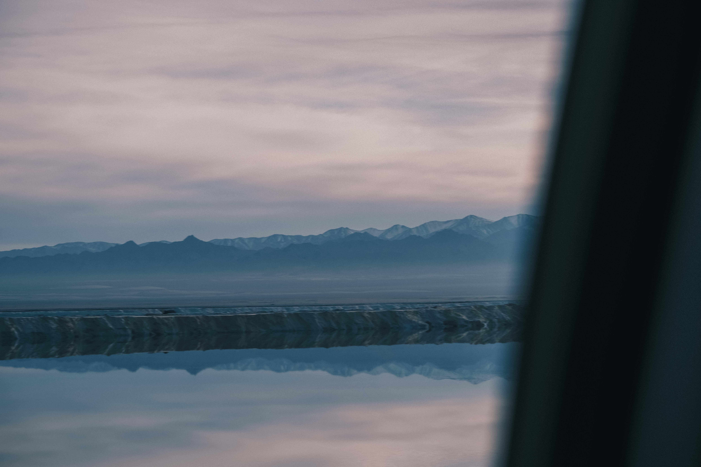
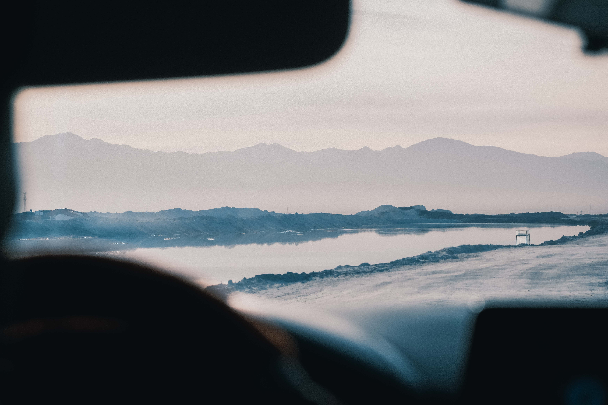
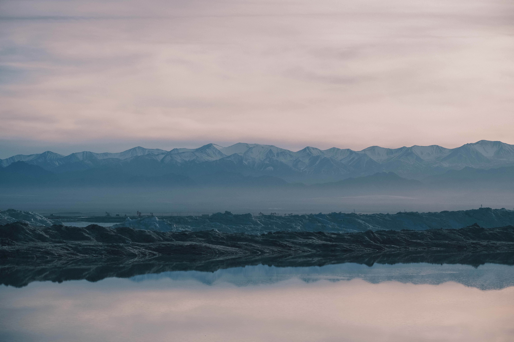
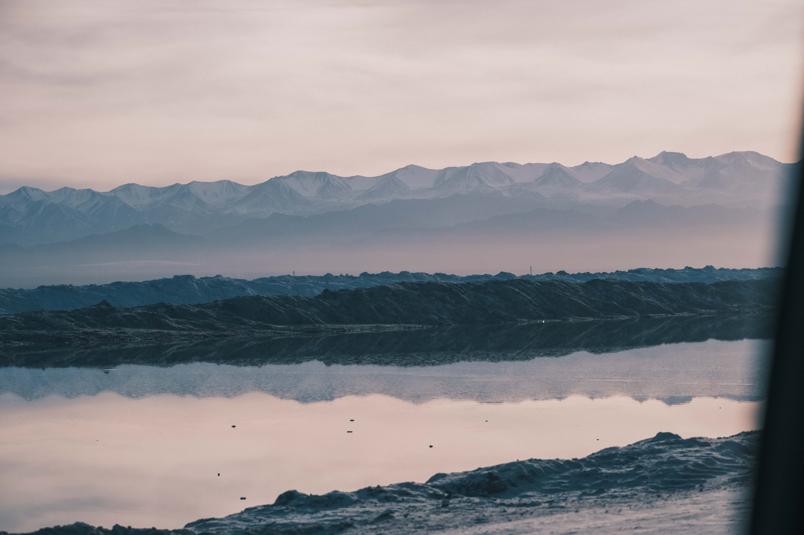
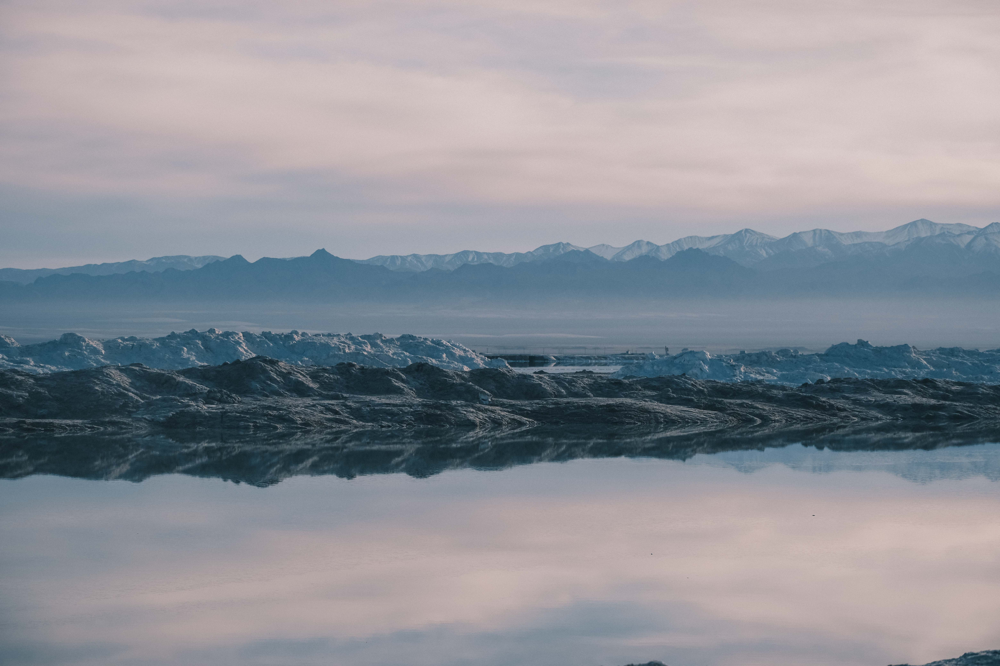
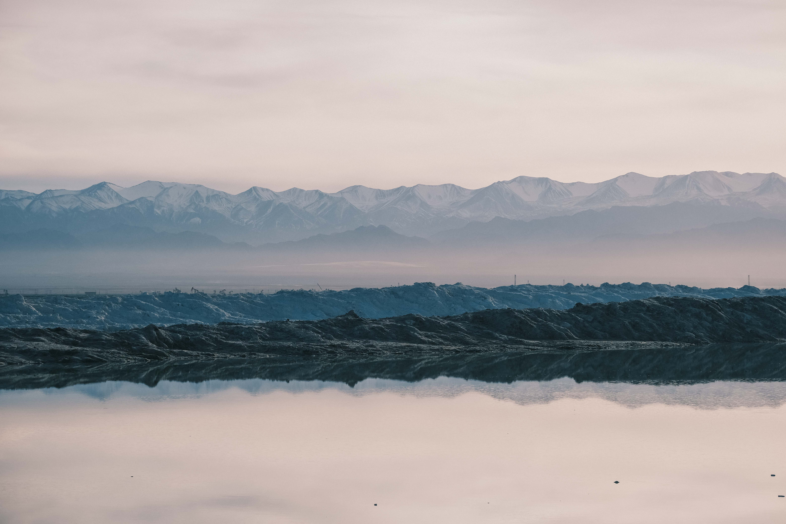

Qaidam Basin, China · 2023
Salt
Lake
Water arrives. Salt remains.Project 01
Water arrives.
Salt remains.
Photographed in the Qaidam Basin, China. Salt lakes form in closed basins where water flows in but has no route to the sea. Rivers and groundwater carry dissolved minerals into the basin. Under a dry climate, evaporation removes the water while the minerals remain, gradually concentrating the lake into brine and leaving salt crystals along its margins.





